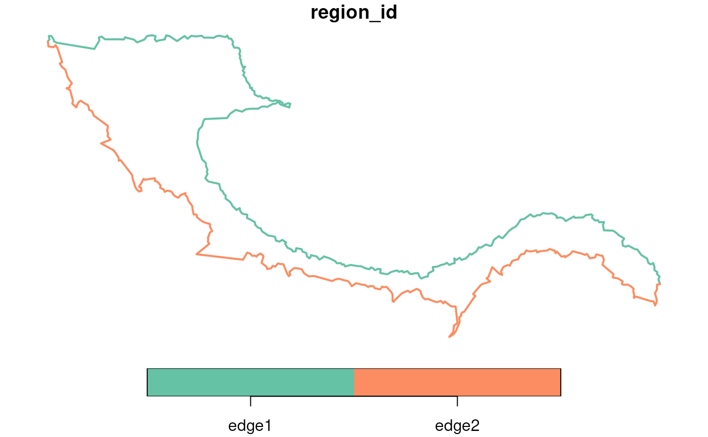
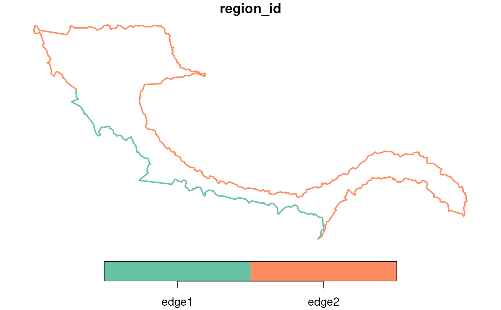

Split a polygon boundary into two parts using anchor points
Source:R/GetBoundary.R
SplitBoundaryPolyByAnchor.RdThis function takes an sf POLYGON object and two anchor points (or infers them) to split the polygon boundary into two LINESTRING edge segments.
Value
An sf object with two LINESTRING features and a 'region_id' column indicating edge1 and edge2.
Examples
# Load coordinates
coords <- readRDS(system.file("extdata", "MouseBrainCoords.rds",
package = "SpNeigh"
))
head(coords)
#> x y cell cluster
#> 1 1898.815 2540.963 1 4
#> 2 1895.305 2532.627 2 4
#> 3 2368.073 2534.409 3 2
#> 4 1903.726 2560.010 4 4
#> 5 1917.481 2543.132 5 4
#> 6 1926.540 2560.044 6 4
# Build boundary polygons from the boundary points
boundary_points <- getBoundary(
data = coords, one_cluster = 2,
subregion_method = "dbscan",
eps = 120, minPts = 10
)
boundary_polys <- buildBoundaryPoly(boundary_points)
# Split boundary polygon 1 into two edges using leftmost
# and rightmost anchor points
boundary_edges <- splitBoundaryPolyByAnchor(boundary_polys[1, ])
plot(boundary_edges, lwd = 2)

# Split boundary polygon 1 into two edges using two anchor points
pt1 <- c(4000, 1500)
pt2 <- c(2000, 3000)
boundary_edges <- splitBoundaryPolyByAnchor(boundary_polys[1, ],
pt1 = pt1,
pt2 = pt2
)
plot(boundary_edges, lwd = 2)
